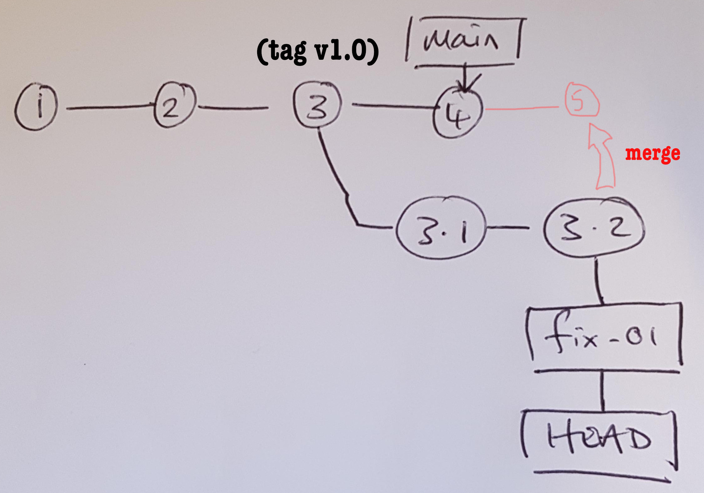
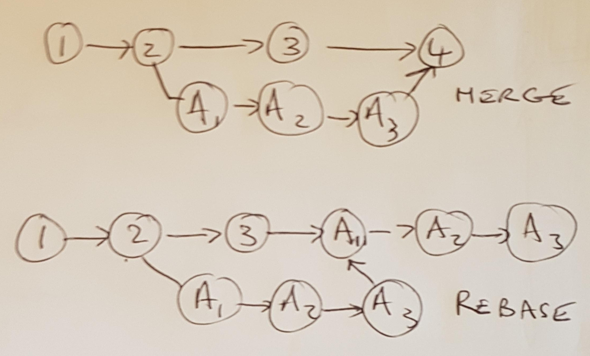

9 Merge
9.1 Recap
From the previous branching example -
- We delivered stage one of an analysis to the client
- We started on the secondary analyses
- Before the secondary analysis was complete, we realised there was an error in the original analysis that needed an emergency fix
- We rewound to an earlier state in the repository and then fixed the error and checked in our work
- We made the work permanent by creating a new branch and then checking out that branch
- We tagged the fix and the re-issued the analysis to the client
- We jumped back to our secondary analysis by checking out the main branch
Ok, so now we have a fix to the error in the original analysis in one branch fix-01 and a partially completed secondary analysis on the main branch. We want to bring the changes from the fix into our present work.
To give a rough mental model, we want to do something like this:

9.2 Merge processes
There are two related approaches for combining your changes into a shared repository; rebase and merge. I tend not to use git rebase and stick with git merge which hasn’t caused me any major problems.
The distinction between a rebase and a merge is that the merge takes all the changes in one branch and merges them in a single commit whereas a rebase rewrites commits from one branch to another. It might not mean a great deal, but here are what the two look like:

There is also git squash that is used on GitHub, but I won’t discuss that.
Often, merging is a fairly automated process. Run the following.
git checkout main
## Already on 'main'
git merge fix-01You will be prompted to enter a commit message
Merge branch 'fix-01'
# Please enter a commit message to explain why this merge is necessary,
# especially if it merges an updated upstream into a topic branch.
#
# Lines starting with '#' will be ignored, and an empty message aborts
# the commit.save and then you will get the following output.
## Auto-merging branching.R
## Merge made by the 'ort' strategy.
## branching.R | 3 ++-
## 1 file changed, 2 insertions(+), 1 deletion(-)If you look at the difference between the HEAD (the HEAD~1 notation means compare with the previous commit, HEAD~2 means compare with 2 commits prior and so on) and the commit associated with the merge you will see
git diff HEAD~1
## diff --git a/branching.R b/branching.R
## index b60c9f0..8f1c1b3 100644
## --- a/branching.R
## +++ b/branching.R
## @@ -45,6 +45,7 @@ message("\nDESCRIPTIVE SUMMARY:\n")
##
## lyt <- basic_table() %>%
## split_cols_by("arm") %>%
## + split_rows_by("age") %>%
## summarize_row_groups() %>%
## analyze("y", mean, format = "xx.x")
##
## @@ -54,7 +55,7 @@ build_table(lyt, d)
##
## message("\n\nANALYSIS OF CONTINOUS OUTCOME (UNSTRATIFIED):\n")
##
## -lm1 <- lm(y ~ x, data = d)
## +lm1 <- lm(y ~ x * u, data = d)
## summary(lm1)
##
## message("\n\nANALYSIS OF BINARY OUTCOME (UNSTRATIFIED):\n")We now have the changes from the emergency fix in the main branch and we can continue with the secondary analysis.
Sometimes merging doesn’t work quite so smoothly and we need to iron out conflicts.
9.3 Exercises
Exercise 9.1 Complete the analysis by adding the following code to generate a figure from the fitted model.
p1 <- ggplot(d_fit, aes(x = arm, y = pr_z)) +
geom_point() +
geom_linerange(aes(ymin = pr_z_lb, ymax = pr_z_ub)) +
scale_x_discrete("") +
scale_y_continuous("Probability of response")
ggsave("fig-sec.png", p1, width = 10, height = 10, units = "cm")Here is what you need to do:
- Add the above code to the
branching.Rscript. - Run the updated script
Rscript branching.Rto make sure it works. - Check that a figure
fig-sec.pngwas produced. - Edit the
.gitignorefile so that the figure does not get committed to the repository. - Stage and commit the files and then review the commit history.
- Create a v2.0 tag with an meaningful message (
git tag -a <tag name> -m "<desc>").
Exercise 9.2 Usually it makes sense to create a new branch for each piece of development we undertake. This ensures that the main branch continues to reflect a working version at all times. The goal of this exercise is to simply give you more familiarity with switching between branches.
Create a new branch from the current state and call it analysis-03 Run the following code:
git branch analysis-03
git checkout analysis-03
git statusAdd the analysis code into branching.R
message("\n\nANALYSIS OF SURVIVAL OUTCOME (UNSTRATIFIED):\n")
lm3 <- coxph(Surv(w, evt) ~ x, data = d)
summary(lm3)Run the script to make sure it works then stage and commit along with an updated .gitignore files that excludes all png files.
Add the following code:
png("fig-surv.png")
plot(survfit(Surv(w, evt) ~ x, data = d), lty = 1:2)
dev.off()Run the script to make sure it works then stage and commit.
git add branching.R
git commit -m "Add survival analysis"
## [analysis-03 b88a312] Add survival analysis
## 1 file changed, 8 insertions(+)Treat this as the release by tagging it as v3.0.
git tag -a v3.0 -m "Stage 3 analysis"Checkout the main branch and merge the analysis into main.
git checkout main
git merge analysis-03
## Updating 0f5a8df..b88a312
## Fast-forward
## branching.R | 8 ++++++++
## 1 file changed, 8 insertions(+)Review the commit history:
git log --oneline --graph --all
## * b88a312 (HEAD -> main, tag: v3.0, analysis-03) Add survival analysis
## * 0f5a8df Add visualisation of results
## * 3c9d4a3 Merge branch 'fix-01'
## |\
## | * 10297de (tag: v1.1, fix-01) Add emergency fix
## * | 30c3a10 WIP
## |/
## * 93edb00 (tag: v1.0) Add analysis stage 1
## * 3257d03 Revise approach in capturing user input
## * 02446ff Add newline
## * 8678072 Add myscript
## * b9255b8 First commitEven though we cannot see the merge here, we can confirm it happened with the following command that lists all branches that have been merged to main.
git branch --merged main
## analysis-03
## fix-01
## * mainAt this point, you have been introduced to the fundamentals of git. But there are things that are going to catch you out. For example, in the above work, we used three-way merges. These are convenient but can also get messy when your branching structure gets complex.